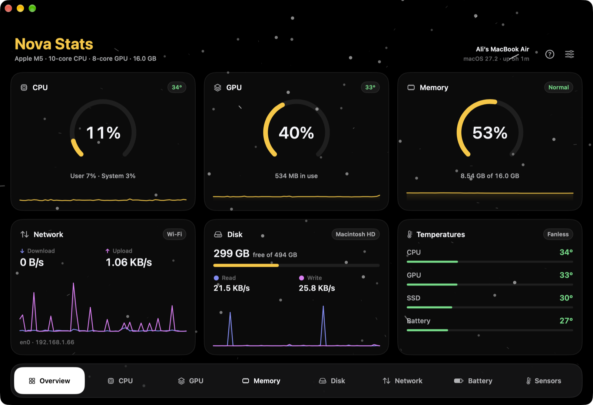
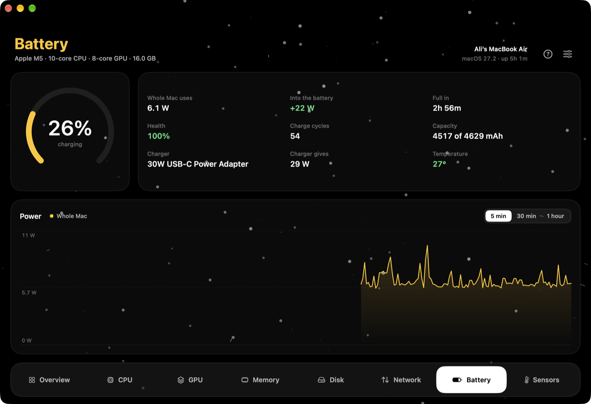
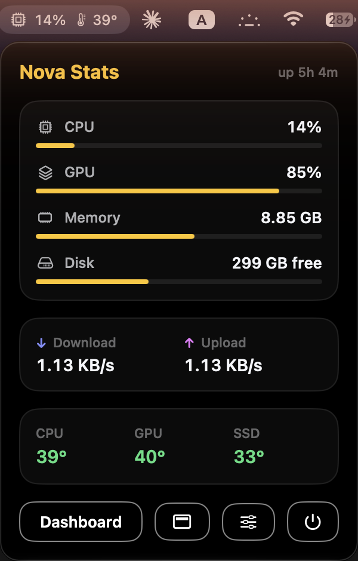
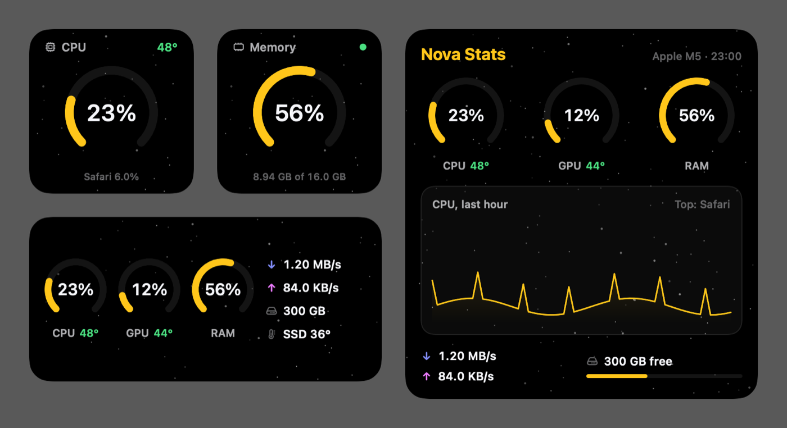
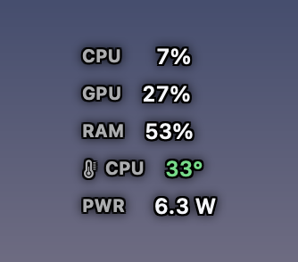

Nova Stats
What your Mac is doing, in Nova's colors.
CPU, GPU, memory, disk, network, battery and temperatures, in a dashboard, the menu bar, a small HUD over your other apps and desktop widgets.
Free and open source · macOS 15 or newer · Apple Silicon

Everything at a glance
Read straight from the chip's own counters and sensors, once a second, using about 1% of one CPU core when the window is closed.
CPU and GPU
Load overall and per core, efficiency and performance cores apart, plus the GPU and the memory it uses.
Memory and apps
Counted the way Activity Monitor counts it, with the apps using the most memory or CPU.
Disk and drives
Space left, read and write speed, every connected drive, and an Eject button for external ones.
Network
Download and upload speed, Wi-Fi or Ethernet, and how much went through since you switched on.
Battery and power
Health, charge cycles, time left, the charger, and how many watts the whole Mac uses right now.
Temperatures
CPU, GPU, SSD and battery, plus every other sensor the chip has. In °C or °F.

Wherever you look
Use the parts you like and switch off the rest in Settings.

The menu bar, with a quick panel, an optional mini CPU graph and a HUD switch

Four desktop widgets

The HUD floats over every app, even in full screen, with no box behind it, and clicks go right through it
Shortcuts from anywhere
⌃⌥N opens the dashboard and ⌃⌥H shows or hides the HUD, from any app. You can change both.
Alerts
A notification when the Mac runs hot, memory gets tight, the disk is almost full or the CPU stays busy.
Looks like Nova
Black, white stars and one yellow accent. The same 3D starfield as Nova, drawn on the GPU.
Install
Nova Stats isn't signed with a paid Apple developer account, so macOS asks you once to allow it.
Download
Get Nova-Stats.dmg and open it.
Drag to Applications
Drag Nova Stats onto the Applications folder in the window that opens, then open it from Applications.
Allow it once
If macOS says it can't check the app, open System Settings → Privacy & Security, scroll down and press Open Anyway.
Questions
The same answers are in the app, under Settings → About.
Is Nova Stats free?
Yes, completely. It's open source under the MIT license, so you can read the code, change it and share it.
Why does macOS say it can't check the app?
Apple only vouches for apps from developers who pay for a yearly account. Nova Stats isn't signed that way, so the first time macOS blocks it. Open System Settings, go to Privacy & Security, scroll down and press Open Anyway. You only do this once.
Does it send my data anywhere?
No. Nova Stats never connects to the internet. Everything it measures stays on your Mac.
Does it slow my Mac down?
Barely. With the dashboard closed it uses about 1% of one CPU core. The open dashboard with moving stars uses about 7%; turn the stars off in Settings if you like.
Where do the temperatures come from?
Straight from the chip's own sensors (the SMC and the system's temperature sensors), the same ones macOS uses to run the fans. The CPU number is the average of the core sensors.
Which Macs does it work on?
Macs with Apple Silicon (M1 to M5) on macOS 15 or newer. On Intel Macs most numbers work, but some temperatures may be missing.
Why do the widgets update only every few minutes?
macOS decides how often widgets may refresh. For numbers that change every second, use the menu bar or the HUD.
Why are some apps missing from the Apps list?
Without an administrator password macOS only lets an app look at your own processes, not the system's. Everything you run yourself is there.
Why don't alerts show up?
macOS needs your permission for notifications. Open System Settings, then Notifications, find Nova Stats and allow them. Settings → Alerts in the app has a button that takes you there.
How do I remove it?
Quit it from the menu bar panel, then drag Nova Stats from Applications to the Bin. Its settings are in ~/Library/Preferences/com.mammadali.novastats.plist.